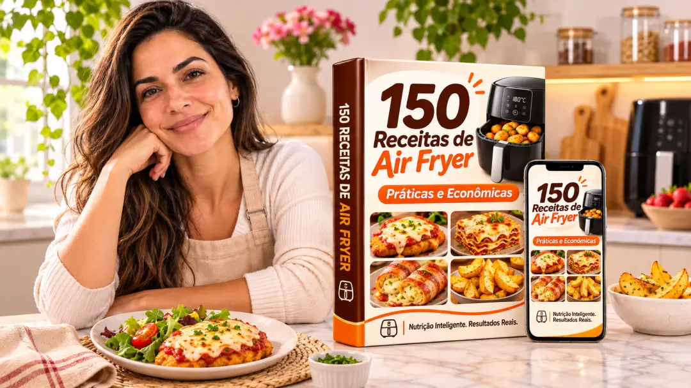
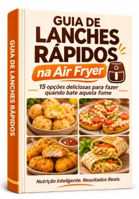
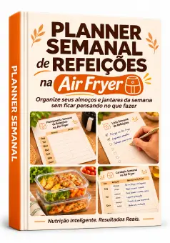
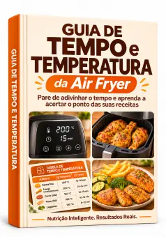
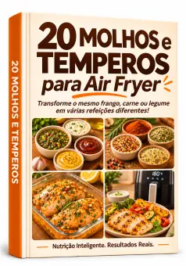
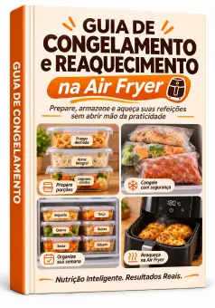
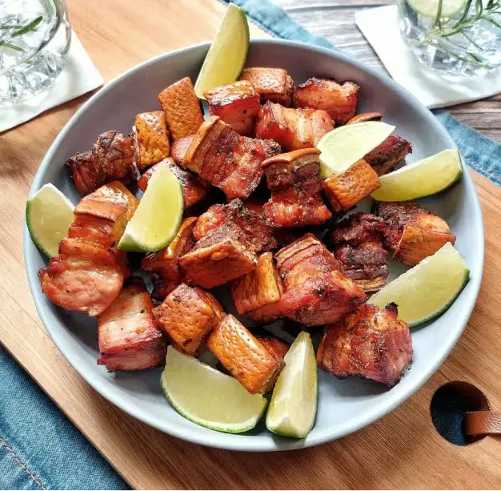

Esta promoção acaba hoje — 24/11/2026
150 Receitas de Air Fryer Práticas e Econômicas
Transforme Sua Air Fryer em Uma Máquina de Fazer Comida Gostosa e Pronta em 15 Minutos.
150 receitas deliciosas, fáceis, baratas e que funcionam de verdade!

BENEFÍCIOS DO PRODUTO
🍗
150 receitas sem cair na repetição
⏱️
Receitas rápidas para a sua rotina
🛒
Ingredientes baratos e fáceis de encontrar
📖
Passo a passo simples e ilustrado
🔥
Tempo e temperatura indicados
😋
Comida de verdade com sabor de restaurante
👨👩👧
Opções para toda a família
📱
Acesso no celular ou impresso
VEJA ALGUMAS RECEITAS
QUE VOCÊ RECEBE
Descubra como preparar pratos deliciosos usando a Air Fryer que você já tem em casa!
[PLACEHOLDER — PRÉVIA 1]
Prévia 1 — Frango à Parmegiana na Air Fryer
Frango douradinho, molho de tomate e queijo derretido, com aquele sabor de restaurante.
Página interna do livro — Toque para ampliar.
[PLACEHOLDER — PRÉVIA 2]
Prévia 2 — Escondidinho de Carne Moída na Air Fryer
Purê cremoso, recheio bem temperado e queijo gratinado em uma travessa própria para Air Fryer.
Página interna do livro — Toque para ampliar.
[PLACEHOLDER — PRÉVIA 3]
Prévia 3 — Filé de Frango Recheado com Queijo
Crocante por fora, suculento por dentro e com queijo derretendo no recheio.
Página interna do livro — Toque para ampliar.
[PLACEHOLDER — PRÉVIA 4]
Prévia 4 — Batata Recheada com Queijo e Bacon
Batata macia por dentro, douradinha por fora e com um recheio irresistível.
Página interna do livro — Toque para ampliar.
[PLACEHOLDER — PRÉVIA 5]
Prévia 5 — Almôndegas Gratinadas na Air Fryer
Almôndegas caseiras com molho de tomate e queijo gratinado, preparadas em um recipiente adequado.
Página interna do livro — Toque para ampliar.
[PLACEHOLDER — PRÉVIA 6]
Prévia 6 — Coxinha de Frango Crocante na Air Fryer
Casquinha dourada, recheio cremoso e todo o sabor de uma coxinha caseira, sem fritura por imersão em óleo.
Página interna do livro — Toque para ampliar.
RESULTADOS DE VERDADE
Quem já preparou, aprovou!
Veja o tipo de comida deliciosa que você também pode preparar usando sua Air Fryer.
Esse livro de receitas é
perfeito para você que...
- ✔ Tem uma Air Fryer em casa, mas acaba fazendo sempre batata, nuggets e as mesmas receitas.
- ✔ Quer preparar almoços e jantares gostosos sem depender tanto do fogão ou do forno convencional.
- ✔ Busca economizar no delivery usando ingredientes simples que já tem em casa.
- ✔ Não sabe direito qual temperatura usar, quanto tempo deixar ou como evitar que a comida fique seca.
- ✔ Tem pouca prática na cozinha e precisa de receitas fáceis, com tempo, temperatura e passo a passo.
- ✔ Quer surpreender a família com pratos diferentes, douradinhos e cheios de sabor, sem complicar a rotina.
VOCÊ LEVA 5 BÔNUS EXCLUSIVOS!
Adquira hoje e garanta esses materiais de apoio essenciais sem pagar nada a mais
🎁 BÔNUS 1

Guia de Lanches Rápidos na Air Fryer
15 Opções Deliciosas para Fazer Quando Bate Aquela Fome
R$ 19,90✔ GRÁTIS HOJE
🎁 BÔNUS 2

Planner Semanal de Refeições na Air Fryer
Organize Seus Almoços e Jantares da Semana Sem Ficar Pensando no Que Fazer
R$ 24,90✔ GRÁTIS HOJE
🎁 BÔNUS 3

Guia de Tempo e Temperatura da Air Fryer
Pare de Adivinhar o Tempo e Aprenda a Acertar o Ponto das Suas Receitas
R$ 14,90✔ GRÁTIS HOJE
🎁 BÔNUS 4

20 Molhos e Temperos para Air Fryer
Transforme o Mesmo Frango, Carne ou Legume em Várias Refeições Diferentes!
R$ 19,90✔ GRÁTIS HOJE
🎁 BÔNUS 5

Guia de Congelamento e Reaquecimento na Air Fryer
Prepare, Armazene e Aqueça Suas Refeições Sem Abrir Mão da Praticidade
R$ 20,40✔ GRÁTIS HOJE
ESCOLHA A SUA OFERTA
Selecione o plano ideal para a sua rotina e descubra tudo o que você pode preparar usando sua Air Fryer!
⭐ MAIS RECOMENDADO
SUPER OFERTA
150 Receitas de Air Fryer — COMPLETO
- ✔ Livro Digital 150 Receitas de Air Fryer
- ✔ Lista de Compras Inteligente
- ✔ Acesso Vitalício + Atualizações Gratuitas
- ✔ Entrega Imediata no E-mail + WhatsApp
- 🎁 Bônus 1: Guia de Lanches Rápidos na Air Fryer
- 🎁 Bônus 2: Planner Semanal de Refeições na Air Fryer
- 🎁 Bônus 3: Guia de Tempo e Temperatura da Air Fryer
- 🎁 Bônus 4: 20 Molhos e Temperos para Air Fryer
- 🎁 Bônus 5: Guia de Congelamento e Reaquecimento na Air Fryer
De R$ 197,00 PAGAMENTO ÚNICO
R$ 19,90
COMPRAR AGORA
🔒 Compra Segura⚡ Acesso Imediato
OFERTA BÁSICA
150 Receitas de Air Fryer
- ✔ Livro Digital 150 Receitas de Air Fryer
- ✔ Lista de Compras Inteligente
- ✔ Acesso Vitalício ao Material
- ✔ Entrega Imediata no E-mail + WhatsApp
De R$ 97,00 PAGAMENTO ÚNICO
R$ 10,00
COMPRAR AGORA
🔒 Compra Segura⚡ Acesso Imediato
🛡️
GARANTIA DE SATISFAÇÃO TOTAL
SEU RISCO É ZERO — 7 DIAS DE GARANTIA INCONDICIONAL
Temos tanta confiança na qualidade do nosso material que você tem 7 dias completos para conhecer as receitas e testar suas favoritas na Air Fryer. Se você não gostar do sabor dos pratos, não achar simples o preparo ou se arrepender por qualquer motivo, basta nos enviar um e-mail dentro do prazo para solicitar 100% de reembolso.
SEM PERGUNTAS · SEM ENROLAÇÃO · SEM BUROCRACIA
VEJA O QUE QUEM TESTOU AS RECEITAS ESTÁ FALANDO
Descubra como é possível aproveitar muito mais sua Air Fryer no dia a dia.
4.9
★★★★★
3.541 avaliações
5 estrelas94%
4 estrelas5%
3 estrelas1%
2 estrelas0%
1 estrelas0%
1
Avaliação ilustrativa 1
Camarão empanado
★★★★★
"Sempre achei que camarão empanado só dava certo frito. Fiz na Air Fryer seguindo o guia e ficou crocante por fora e suculento por dentro. Virou meu petisco favorito!"
2
Avaliação ilustrativa 2
Coxinha de frango
★★★★★
"Comecei pelas receitas mais fáceis e fiz as coxinhas de frango. Ficaram douradinhas e crocantes sem fritura por imersão. Já separei outras pra fazer durante a semana. O melhor é não precisar ficar procurando receita toda hora."
3
Avaliação ilustrativa 3
Falafel
★★★★★
"Minha Air Fryer vivia fazendo só pão de queijo e batata congelada kkk. Fiz o falafel e ficou muito bom, bem temperado e sequinho. Agora tenho várias ideias pra variar os jantares sem fazer sempre a mesma comida."
4
Avaliação ilustrativa 4
Torresmo
★★★★★
"Fiz o torresmo na Air Fryer no domingo e todo mundo adorou. Ficou pururuca, crocante e sem aquela gordura toda. Foi fácil de preparar e com certeza vou repetir!"

Os quatro textos acima são exemplos de comunicação para a seção de avaliações, não avaliações reais.
PERGUNTAS FREQUENTES (FAQ)
? 1. As receitas funcionam em qualquer Air Fryer? ▾
As receitas foram pensadas para Air Fryers domésticas convencionais. O tempo e a temperatura podem variar conforme o modelo, a potência, a capacidade e a quantidade de alimento. Algumas preparações precisam de recipientes próprios que caibam no cesto.
? 2. Preciso ter experiência na cozinha? ▾
Não! As receitas contam com ingredientes, medidas, modo de preparo, tempo e temperatura indicados para facilitar sua rotina, mesmo que você esteja começando.
? 3. Vou precisar comprar ingredientes caros? ▾
Não é essa a proposta. O material prioriza ingredientes comuns de mercado e feira, com receitas que podem ser adaptadas conforme suas preferências.
? 4. Tem apenas receitas de frango e batata? ▾
Não! São 150 receitas variadas, com carnes, frango, acompanhamentos, gratinados, lanches, petiscos e outras preparações para aproveitar mais sua Air Fryer.
? 5. As receitas servem para almoço e jantar? ▾
Sim! Você encontra opções para refeições principais, acompanhamentos e lanches. Assim fica mais fácil variar o cardápio durante toda a semana.
? 6. Preciso usar óleo? ▾
Muitas preparações podem ser feitas sem fritura por imersão em óleo. Algumas receitas podem pedir pequenas quantidades de óleo ou azeite para melhorar o resultado.
? 7. Como vou receber o material? ▾
Após a confirmação do pagamento, você recebe o acesso ao material digital pelo e-mail e WhatsApp informados na compra.
? 8. Posso imprimir as receitas? ▾
Sim! O livro digital pode ser consultado no celular, tablet ou computador, e você também pode imprimir suas páginas favoritas.
? 9. Qual a diferença entre o plano Básico e o Completo? ▾
O Básico inclui o livro com as 150 receitas e a Lista de Compras Inteligente. O Completo inclui esses materiais e mais os cinco bônus exclusivos.
? 10. E se eu comprar e não gostar? ▾
Você tem 7 dias de garantia para solicitar o reembolso conforme as condições informadas na oferta.
Ainda não garantiu sua oferta?
Sua Air Fryer pode fazer muito mais do que batata frita e nuggets!
Descubra 150 receitas para preparar refeições saborosas, variar o cardápio e gastar menos com comida pronta.
QUERO MINHAS 150 RECEITAS DE AIR FRYER
⚡ Acesso Imediato · 🔒 Compra Segura · 🛡️ 7 Dias de Garantia